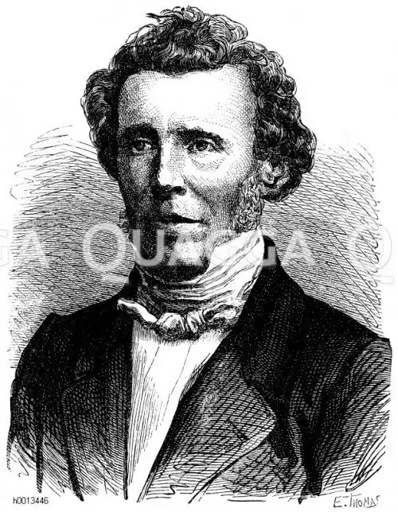

ГЕЛЬДЕРЛІН, Йоганн Хрістіан Фрідріх (Holderlin, Johann Christian Fridrich — 20.03. 1770, м. Лауфен — 07.06.1843, м. Тюбінген) — німецький поет.Серед німецьких (і не лише німецьких) поетів-романтиків було багато людей з тяжкою і трагічною долею. Але й серед них доля Гельдерліна — одна із найтрагічніших. Цього поета прогледів його вік, тоді як його творчість належить до найкращого та найпоетичнішого з написаного німецькою мовою. За життя він знаходив визнання лише у вузькому колі друзів та поодиноких ентузіастів поезії. Зла доля довго переслідувала Гельдерліна й після смерті, і ближчі покоління майже повністю його забули. Радикальний злам намітився лише наприкінці XIX ст., а на початку XX для нього настав нарешті час відродження та тріумфу. Причому, це досить-таки запізніле визнання було напрочуд бурхливим і одностайним. До цього включилися поети та прозаїки, філософи від В. Дільтея до М. Гайдеггера, критики та літературознавці; про Гельдерліна з'явилася величезна література, яка невпинно зростає й досі. Напівжартома И. Бехер писав, що Гельдерліну загрожує нове забуття, цього разу під шквалом праць дослідників, коментаторів, есеїстів.
Народився Гельдерлін в сім'ї бідного пастора у Швабії, виховувався у монастирських школах у Денкендорфі та Маульбронні, а далі навчався у Тюбінгенській семінарії, де дружив з Г.В.Ф. Гегелем і Ф.В, Шеллінгом (вони теж були студентами цієї семінарії). Навчання у Тюбінгенській семінарії збіглося з початком і розгортанням Французької революції, палким прибічником якої став Гельдерлін. У четверту річницю штурму Бастилії троє друзів — Г., Гегель і Шеллінґ — посадили у дворі семінарії "дерево свободи" і виголосили біля нього клятву на вірність ідеалам революції. Слід зазначити, що із трійці приятелів вірність цій клятві зберіг до кінця лише Гельдерлін, але заплатив він за цю вірність ідеалам молодості найтяжчою ціною.
Світогляд Гельдерліна, зокрема така його характерна риса, як універсалізм мислення, схильність бачити життєві явища та проблеми в найширших, "космічних" масштабах формувався у Тюбінгені, в час загального піднесення і великих надій. Він посилено вивчав філософію, зокрема давньогрецьких натурфілософів і Платона, а також Б. Спінозу, Ж.Ж. Руссо, І. Канта. У цей період склалася оригінальна поетична філософія Гельдерліна, якою пройнята вся його творчість. У сутності своїй пантеїстична, вона засновується на одухотворенні природи, на довірі до неї як сили доброї і життєдайної, здатної вести людей до гармонії та щастя. Важливою опорою для філософсько-поетичної системи Гельдерліна стала міфологія, передусім давньогрецька, яку він прагнув трансформувати, зберігаючи, однак, її внутрішню сутність. Характерним явищем ранньої творчості Гельдерліна стали "тюбінгенські гімни". У них оспівуються ідеї та поняття, які Французькою революцією були підняті до рангу найвищих громадсько-політичних і моральних цінностей, стали її символами віри. Так на німецькому ґрунті постали два "Гімни свободі", "Гімн людству", "Гімн дружбі", "Гімн красі" — як своєрідні відлуння Французької революції, її високих прагнень і поривів. Оспівуючи ідеали і пафос Французької революції, Гельдерлін почасти запозичував і її мову та образно-стильову систему. У "тюбінгенських гімнах" він широко вдається до античних образів і ремінісценцій, причому його міфологічні боги й історичні герої тут ототожнюються з алегоричними образами та поняттями Французької революції, теж стилізованими під античність. Багато для нього важила тоді й одична традиція Й.К.Ф. Шиллера, на яку він теж спирався у своїх "тюбінгенських гімнах". Близькі до неї врочисто-патетичний тон цих гімнів, їхній філософський пафос і риторика, ритміка та строфіка. Гельдерлін був і класиком, і романтиком: класиком на ранньому етапі творчості, далі ж його розвиток відбувався в напрямі дедалі більшого зближення з романтизмом, злиття з романтичним рухом.Закінчивши навчання в Тюбінґені, Гельдерлін відмовився прийняти духовний сан і через кілька місяців опісля, у грудні 1793 p., поїхав у Тюрінгію, де розташовувалися тодішні центри німецької духовної культури — Веймар та Йена. Це була спроба молодого поета включитися в основний потік духовного та літературного життя країни. Проте він не був прийнятий ані неокласицистичним Веймаром, ані романтичною Йеною, і це значною мірою спричинилося до того, що Гельдерлін виявився приреченим на самотність і невизнання. У травні 1796 p., відмовившись від подальшої боротьби, Гельдерлін залишив Йену. Настав найкращий, франкфуртський, період життя поета (1796—1798), осяяний коханням до Діотими — Сюзетти Ґонтар, дружини купця Ґонтара, в домі якого він служив гувернером. У цій молодій жінці із середовища франкфуртського купецтва, яке відзначалося практицизмом і бездуховністю, він несподівано зустрів духовно близьку йому людину, наділену від природи здатністю розуміти чи інтуїтивно відчувати весь той світ філософсько-поетичних ідей і цінностей, мріянь і поривань, якими він жив. Природа, краса, Еллада — все, що він палко любив і перед чим схилявся, злилися для нього в цій жінці, яку він назвав грецьким ім'ям Діотима, запозиченим із "Діалогів" Платона. Він пережив високе творче піднесення, завершив першу частину роману "Гіперіон", створив низку поетичних шедеврів. І скрізь у цих творах присутня Діотима: в образі головної героїні роману, юної гречанки, котра уособлює органічність і красу буття, в численних поезіях, прямо чи опосередковано звернутих до неї: Посланнице небес, я чую тебе!О Діотимо! Люба! Я очі звівІ вдячно узрів над собоюДень золотий угорі. Заграли,Оживши, ключі, а на темній земліЗітхнули палко навстріч мені квітки, І, всміхнувшись крізь срібні хмари,З благоговінням Ефір схилився.(Пер. М. Бажана)Та зневажена поетом дійсність вдерлася в його щасливий світ, і восени 1798 р. він змушений був залишити Франкфурт. Наступні півтора року він жив у сусідньому Гамбурзі та час від часу зустрічався із Сюзеттою Ґонтар. Незважаючи на тяжкі переживання, його активна творча діяльність тривала, зокрема, в цей час він працював над драмою "Смерть Емпедокла". У творчому плані це продовження франкфуртського періоду, часу найвищого творчого розквіту Гельдерліна. Але в цей час невідступно назрівала душевна і творча криза поета. У червні 1800 р. Гельдерлін поїхав у Нюртінген до матері, звідти через деякий час — у Штутгарт, де створив знамениті "штутгартські" гімни та елегії ("Архіпелаг", "Пілігримство", "Хліб і вино" та ін.), а опісля — у Швейцарію. Його душевний неспокій зростав, він не міг довго втриматися на жодному місці. Наприкінці 1801 р. несподівано виїхав до Франції, у Бордо, де теж найнявся домашнім учителем. За півроку він залишив Бордо і якимось дивом добрався до Нюртінгена; вкрай виснажений і напівбожевільний, у жебрацькому лахмітті, він не впізнавав нікого, і його важко було впізнати. Це був перший напад тяжкої душевної хвороби, яка, однак, ще на деякий час його відпустила. У 1802-1806 pp. Гельдерлін повернувся до свідомого життя і творчості, яка спершу в цей період набула значної інтенсивності. Він перекладав оди Піндара та трагедії Софокла, писав свої пізні поеми та поезії, що відзначаються глибиною змісту та художньою оригінальністю ("Мати Земля", "Єдиний", "Патмос", "Німеччина" та ін.). З 1805 р. напади душевної хвороби стали дедалі частішими та тривалішими, а наступного 1806 р. остаточно обірвалося свідоме життя та творчість поета, хоча фізичне його існування продовжувалося до 1843 р. Та повернімося до франкфуртсько-гамбурзького періоду творчості Гельдерліна. Головні теми його поезії цього періоду — природа, Еллада, Діотима, кохання до неї, причому виступають вони не розрізнено, а в органічній єдності. Однак провідною, організуючою є в поезії Гельдерліна тема природи. У своєму філософсько-поетичному світобаченні він виходив з того, що в усій природі розлито духовне, божественне начало. Воно у людині набуває концентрованого втілення, і таким чином людина з усім сущим пов'язана не зовнішніми, механічними, а глибинними й органічними, духовними зв'язками. Одним із головних завдань поезії Гельдерліна. вважав виявлення цих зв'язків людини з природою, їхньої єдності. Вся його поезія пройнята глибокою та животрепетною любов'ю до природи, але водночас їй чужий ідилічний, сентиментально-споглядальний підхід до природи. Своєрідність поезії Гельдерліна полягає і в тому, що нове, романтичне світовідчуття він прагнув виразити на "еллінський лад", за допомогою еллінських ритмів і метрики, жанрів і форм; особливо це характерно для його поезії середнього періоду. Він звертався до античних жанрів оди, гімну, елегії тощо. Він переносив на німецький ґрунт складні строфічні форми давньогрецької поезії, такі, як алкеєва, сапфічна строфи тощо. Та найістотнішим було для нього збереження внутрішнього ладу давньогрецької поезії, позначеного прагненням до гармонії, "шляхетною простотою та спокійною величчю" за відомою формулою Й.Й. Вінкельмана. Він прагнув поєднувати "іонійську тверезість" зі "священним вогнем" і образно називав свій стиль "священно-тверезим". Та при всьому тому поезія Гельдерліна відзначається дивовижною, як на той час, внутрішньою свободою і розкутістю; вона є чи не найповнішим вираженням цього романтичного ідеалу, який для переважної більшості поетів-романтиків лишався недосяжним. У його поезіях цілком невимушено, спонтанно виникає вільний простір і рух природи, "живого космосу", в якому поет почувається як у материнському лоні, і в цілковитій відповідності з цим перебуває вільний простір і рух поезії. Слід вказати і на незвичайну, якусь "епічну" широту навіть інтимних переживань поета, які відображаються, підхоплюються природою, посилюються нею і досягають ледве не космічних обширів. Особливо це стосується інтимної лірики Гельдерліна, яка вражає цілковитою відсутністю камерності, вузької суб'єктивності, — почуття поета легко трансформуються у близький і дружній світ "живого космосу", перетворюються або в якесь нешумливе, світло-радісне всезагальне свято, як, приміром, у вірші "Захід сонця", написаному в щасливий франкфуртський період, або ж у всезагальну містерію печалі та скорботи, як-от у ряді віршів, написаних у гамбурзький період, після розлуки з Діотимою. У пізніші періоди творчого життя його дедалі більше непокоїли суперечності пореволюційної дійсності, зростаючі розбіжності між його ідеальними прагненнями та наявним буттям.